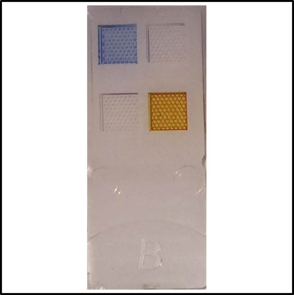

Convolutional Neural Net
Why did I look at this?
 The flagship technology at my current company is color-based breath sensing. Basically, you breath in the device,
the sensor reacts with the O2 and CO2 in your breath, and we look at the color change due to the reaction. The way
we manufacture these color-based sensors is by depositing these chemicals on a plastic substrate. Since the chemicals
are colored, this makes visual or imaging-based systems ideal for finding sensors that do not meet our standards.
Currently, this is all done visually by an operator; however we want to have a method that is not dependent on the
operator and can be easily scaled. For this, a camera with a convolutional neural net is a great candidate.
The flagship technology at my current company is color-based breath sensing. Basically, you breath in the device,
the sensor reacts with the O2 and CO2 in your breath, and we look at the color change due to the reaction. The way
we manufacture these color-based sensors is by depositing these chemicals on a plastic substrate. Since the chemicals
are colored, this makes visual or imaging-based systems ideal for finding sensors that do not meet our standards.
Currently, this is all done visually by an operator; however we want to have a method that is not dependent on the
operator and can be easily scaled. For this, a camera with a convolutional neural net is a great candidate.
Getting images
 So the first step is, of course, to get some pictures. In order to do this I was able to build a small photo booth using
high precision laser cutting, heat welding, and structured materials (a laser cut cardboard box hot-glued together) to hold
a plate of sensors and ipod in a reproducible position without outside light.
So the first step is, of course, to get some pictures. In order to do this I was able to build a small photo booth using
high precision laser cutting, heat welding, and structured materials (a laser cut cardboard box hot-glued together) to hold
a plate of sensors and ipod in a reproducible position without outside light.
Making the image stack

Processing was fairly straitforward on these. Since the camera was face down, the auto-orientation made for a bit of
inconsistency on orientation. The first step was to do a simple check and if needed, flip the images to a set orientation.
The second step was slightly tedious, which was to take each plate of 16 sensors and divide it into 16 images. Since the
booth made for pretty consistent images, I could do this with a simple set of boxes. Finally, I could just stack the images
into a n layer stack of rgb images to feed into Keras. Thankfully numpy has a decent compression algorithm built in for .npz
files for easy saving as well.
Classifying the images
 This was the fun part. This stack ended up having roughly 750 images in it, and they need to be manually classified in order
to train the neural net: This is usually where you might want an intern. In order to make the process as painless as possible,
I built a simple interface in Tkinter that allows for simple sorting. The images show up inverted in the viewing window in
order to make it easier to spot defects, the user can press pass or fail, and the result is stored for training and evaluating
the CNN.
This was the fun part. This stack ended up having roughly 750 images in it, and they need to be manually classified in order
to train the neural net: This is usually where you might want an intern. In order to make the process as painless as possible,
I built a simple interface in Tkinter that allows for simple sorting. The images show up inverted in the viewing window in
order to make it easier to spot defects, the user can press pass or fail, and the result is stored for training and evaluating
the CNN.
Running the CNN
 Looking at the volume of Letters that Nature published over time, we are currently seeing a long decrease, where we might
even expect to see a lower rate in the near future than we did in the late 1800's. There is quite an increase from 1920 to 1960,
then a spike and peak in the 1960's.
Looking at the volume of Letters that Nature published over time, we are currently seeing a long decrease, where we might
even expect to see a lower rate in the near future than we did in the late 1800's. There is quite an increase from 1920 to 1960,
then a spike and peak in the 1960's.
Conclusions
The CNN gave a classification accuracy of about 85%, which is not nearly as high as we want to see for this. The biggest reason
is probably that we only have about 750 images for 2 classes, which is a pretty low number for a CNN. Some other factors
that need improved are some position correction to get the images a touch more consistent and better lighting in the high-tech
photo booth.
Thanks for reading!